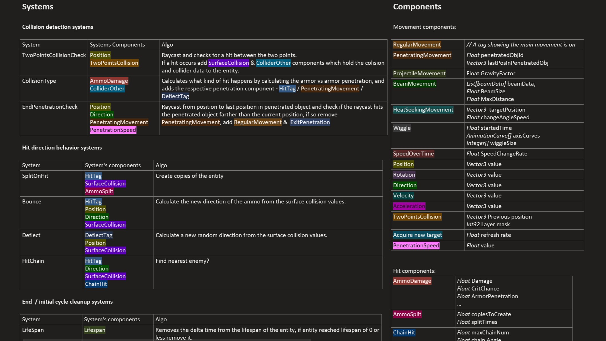

Requirements
The projectile system is one of the core systems of Synthetik2 - as the game kind of revolves around shooting, a lot of shooting.
From the design standpoint a projectile can be used by multiple systems, such as weapons, traps, items, skills and more.
After inspecting the designers wishes and investigating the needs within the game I compiling its features and concluded the following:
- The projectiles themselves should be able to move in various unique ways, from classic ballistic movement through laser beam to heat seeking rockets.
- Each projectile can have unique actions added to it before or after its initialization. These actions can range from splitting the projectile on hit or reducing its movement speed.
- Potentially tens if not hundred projectiles can be present at each frame and optimization is vital
- Projectiles should be easy to sync by our multiplayer engineer.
Moving to ECS
While working on this system I encountered some Unity talks about its DOTS package and the future of unity, and immediately saw the potential of implementing our projectile system using Entity Component System (ECS in short).
The reason I was so enthusiastic about ECS is that it provides a data-oriented design which allows a lot of flexibility while managing memory better,
utilizing multithreading and using unity's burst compiler to greatly reduce performance, especially when compared with game object workflow.
With the blessing of the team lead I started implementing the system using ECS and was immediately blown away by its performance and flexibility.
The ability to add behavior to an object by simply adding a data component to it allowed for easy integration of the projectile system's unique requirements which seemed complex when viewed through the OOP lens.
This also created a workflow where one could add a new behavior without the need to know or change other systems in one of the most elegant ways to follow the open closed principle.
Additionally, moving away from the game object workflow allowed me to step away from the “normal” way of working within unity and find better ways of handling certain behaviors such as ditching collision components for simple raycast and using managers to batch draw calls for mesh and particle system rendering.
Working in a data centric way also made defining the configurable data for our "UniversEdit" tool straight forward and syncing the projectiles between different game clients to a much easier task.
Choosing to implement our projectile system using ECS from the early stages proved to be one of our better technology decisions that kept the projectile system flexible and performant throughout the game's development.
Some early ECS system implementation notes:
